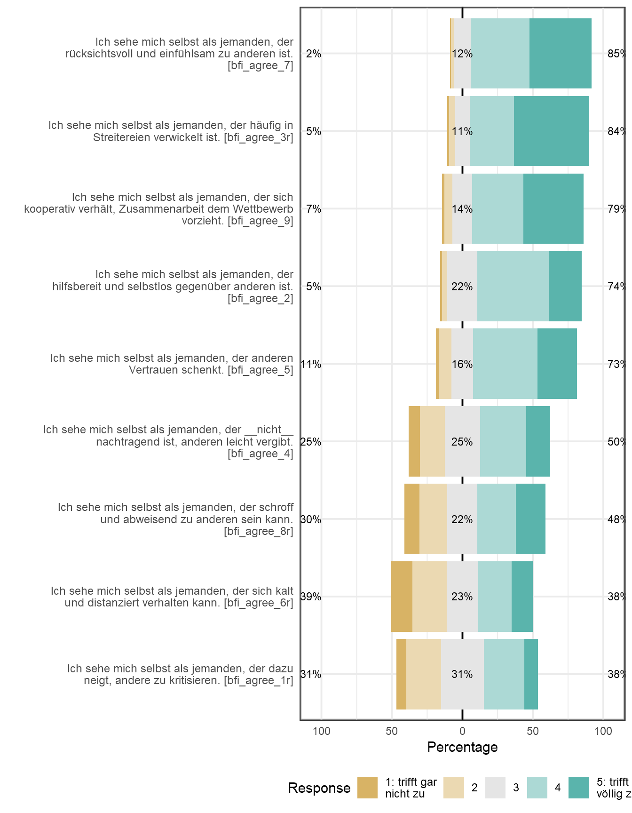
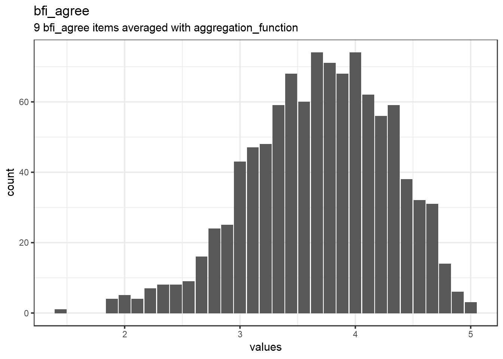
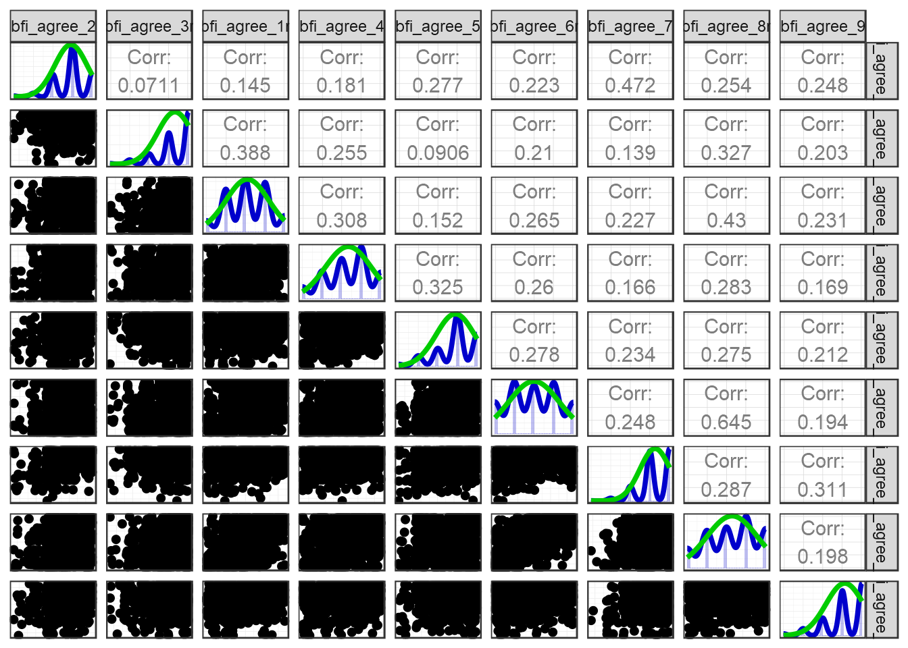

source("0_helpers.R")
knitr::opts_chunk$set(warning = FALSE, message = FALSE)
pander::panderOptions("table.split.table", Inf)
pander::panderOptions('round',2)
pander::panderOptions('digits',2)
pander::panderOptions('keep.trailing.zeros',TRUE)
load("data/cleaned_selected.rdata")
knitr::opts_chunk$set(echo = FALSE, error = TRUE, dev = "CairoPNG")
library(ggplot2)
theme_set(theme_bw())
library(codebook)For now based on old exclusion criteria –> update later
636 people were excluded.
Dataset name: data %>% select(starts_with(“bfi_agree”))
The dataset has N=1024 rows and 10 columns. 1024 rows have no missing values on any column.
Metadata for search engines
Date published: 2019-04-24
keywords: bfi_agree_2, bfi_agree_3r, bfi_agree_1r, bfi_agree_4, bfi_agree_5, bfi_agree_6r, bfi_agree_7, bfi_agree_8r, bfi_agree_9 and bfi_agree
Reliability: ωordinal [95% CI] = 0.78 [0.76;0.8].
Missing: 0.


| Index | Estimate |
|---|---|
| Omega | 0.77 |
| Omega Psych Tot | 0.81 |
| Omega Psych H | 0.54 |
| Omega Ordinal | 0.78 |
| Cronbach Alpha | 0.76 |
| Greatest Lower Bound | 0.83 |
| Alpha Ordinal | 0.79 |
Positive correlations: 36 out of 36 (100%)

Detailed output
##
## Information about this analysis:
##
## Dataframe: res$dat
## Items: bfi_agree_2, bfi_agree_3r, bfi_agree_1r, bfi_agree_4, bfi_agree_5, bfi_agree_6r, bfi_agree_7, bfi_agree_8r, bfi_agree_9
## Observations: 1024
## Positive correlations: 36 out of 36 (100%)
##
## Estimates assuming interval level:
##
## Omega (total): 0.77
## Omega (hierarchical): 0.54
## Revelle's omega (total): 0.81
## Greatest Lower Bound (GLB): 0.83
## Coefficient H: 0.81
## Cronbach's alpha: 0.76
## Confidence intervals:
## Omega (total): [0.75, 0.79]
## Cronbach's alpha: [0.73, 0.78]
##
## Estimates assuming ordinal level:
##
## Ordinal Omega (total): 0.78
## Ordinal Omega (hierarch.): 0.75
## Ordinal Cronbach's alpha: 0.79
## Confidence intervals:
## Ordinal Omega (total): [0.76, 0.8]
## Ordinal Cronbach's alpha: [0.77, 0.81]
##
## Note: the normal point estimate and confidence interval for omega are based on the procedure suggested by Dunn, Baguley & Brunsden (2013) using the MBESS function ci.reliability, whereas the psych package point estimate was suggested in Revelle & Zinbarg (2008). See the help ('?scaleStructure') for more information.
##
## Eigen values: 3.082, 1.248, 0.982, 0.911, 0.744, 0.611, 0.59, 0.511, 0.321
## Loadings:
## TC1 TC2
## bfi_agree_2 0.819
## bfi_agree_3r 0.737 -0.207
## bfi_agree_1r 0.738
## bfi_agree_4 0.526 0.126
## bfi_agree_5 0.184 0.506
## bfi_agree_6r 0.599 0.203
## bfi_agree_7 0.753
## bfi_agree_8r 0.730 0.151
## bfi_agree_9 0.175 0.476
##
## TC1 TC2
## SS loadings 2.329 1.845
## Proportion Var 0.259 0.205
## Cumulative Var 0.259 0.464
##
## vars n mean sd median trimmed mad min max range skew
## bfi_agree_2 1 1024 3.91 0.82 4 3.96 0.00 1 5 4 -0.65
## bfi_agree_3r 2 1024 4.31 0.88 5 4.46 0.00 1 5 4 -1.30
## bfi_agree_1r 3 1024 3.10 1.08 3 3.09 1.48 1 5 4 -0.06
## bfi_agree_4 4 1024 3.33 1.17 3 3.39 1.48 1 5 4 -0.33
## bfi_agree_5 5 1024 3.89 0.97 4 4.00 1.48 1 5 4 -0.82
## bfi_agree_6r 6 1024 2.99 1.29 3 2.99 1.48 1 5 4 0.01
## bfi_agree_7 7 1024 4.26 0.77 4 4.36 1.48 1 5 4 -0.88
## bfi_agree_8r 8 1024 3.28 1.28 3 3.35 1.48 1 5 4 -0.24
## bfi_agree_9 9 1024 4.12 0.95 4 4.26 1.48 1 5 4 -1.04
## kurtosis se
## bfi_agree_2 0.65 0.03
## bfi_agree_3r 1.28 0.03
## bfi_agree_1r -0.75 0.03
## bfi_agree_4 -0.77 0.04
## bfi_agree_5 0.23 0.03
## bfi_agree_6r -1.11 0.04
## bfi_agree_7 0.50 0.02
## bfi_agree_8r -1.05 0.04
## bfi_agree_9 0.65 0.03| name | label | data_type | value_labels | missing | complete | n | mean | sd | p0 | p25 | p50 | p75 | p100 | hist |
|---|---|---|---|---|---|---|---|---|---|---|---|---|---|---|
| bfi_agree_2 | Ich sehe mich selbst als jemanden, der hilfsbereit und selbstlos gegenüber anderen ist. | numeric | 1. 1: trifft gar nicht zu, 2. 2, 3. 3, 4. 4, 5. 5: trifft völlig zu, NA. Item was never rendered for this user. |
0 | 1024 | 1024 | 3.91 | 0.82 | 1 | 3 | 4 | 4 | 5 | ▁▁▁▃▁▇▁▃ |
| bfi_agree_3r | Ich sehe mich selbst als jemanden, der häufig in Streitereien verwickelt ist. | numeric | 5. 1: trifft gar nicht zu, 4. 2, 3. 3, 2. 4, 1. 5: trifft völlig zu, NA. Item was never rendered for this user. |
0 | 1024 | 1024 | 4.31 | 0.88 | 1 | 4 | 5 | 5 | 5 | ▁▁▁▂▁▅▁▇ |
| bfi_agree_1r | Ich sehe mich selbst als jemanden, der dazu neigt, andere zu kritisieren. | numeric | 5. 1: trifft gar nicht zu, 4. 2, 3. 3, 2. 4, 1. 5: trifft völlig zu, NA. Item was never rendered for this user. |
0 | 1024 | 1024 | 3.1 | 1.08 | 1 | 2 | 3 | 4 | 5 | ▂▆▁▇▁▇▁▂ |
| bfi_agree_4 | Ich sehe mich selbst als jemanden, der nicht nachtragend ist, anderen leicht vergibt. | numeric | 1. 1: trifft gar nicht zu, 2. 2, 3. 3, 4. 4, 5. 5: trifft völlig zu, NA. Item was never rendered for this user. |
0 | 1024 | 1024 | 3.33 | 1.17 | 1 | 2 | 3 | 4 | 5 | ▂▅▁▆▁▇▁▅ |
| bfi_agree_5 | Ich sehe mich selbst als jemanden, der anderen Vertrauen schenkt. | numeric | 1. 1: trifft gar nicht zu, 2. 2, 3. 3, 4. 4, 5. 5: trifft völlig zu, NA. Item was never rendered for this user. |
0 | 1024 | 1024 | 3.89 | 0.97 | 1 | 3 | 4 | 5 | 5 | ▁▂▁▃▁▇▁▅ |
| bfi_agree_6r | Ich sehe mich selbst als jemanden, der sich kalt und distanziert verhalten kann. | numeric | 5. 1: trifft gar nicht zu, 4. 2, 3. 3, 2. 4, 1. 5: trifft völlig zu, NA. Item was never rendered for this user. |
0 | 1024 | 1024 | 2.99 | 1.29 | 1 | 2 | 3 | 4 | 5 | ▅▇▁▇▁▇▁▅ |
| bfi_agree_7 | Ich sehe mich selbst als jemanden, der rücksichtsvoll und einfühlsam zu anderen ist. | numeric | 1. 1: trifft gar nicht zu, 2. 2, 3. 3, 4. 4, 5. 5: trifft völlig zu, NA. Item was never rendered for this user. |
0 | 1024 | 1024 | 4.26 | 0.77 | 1 | 4 | 4 | 5 | 5 | ▁▁▁▂▁▇▁▇ |
| bfi_agree_8r | Ich sehe mich selbst als jemanden, der schroff und abweisend zu anderen sein kann. | numeric | 5. 1: trifft gar nicht zu, 4. 2, 3. 3, 2. 4, 1. 5: trifft völlig zu, NA. Item was never rendered for this user. |
0 | 1024 | 1024 | 3.28 | 1.28 | 1 | 2 | 3 | 4 | 5 | ▃▆▁▆▁▇▁▆ |
| bfi_agree_9 | Ich sehe mich selbst als jemanden, der sich kooperativ verhält, Zusammenarbeit dem Wettbewerb vorzieht. | numeric | 1. 1: trifft gar nicht zu, 2. 2, 3. 3, 4. 4, 5. 5: trifft völlig zu, NA. Item was never rendered for this user. |
0 | 1024 | 1024 | 4.12 | 0.95 | 1 | 4 | 4 | 5 | 5 | ▁▁▁▃▁▇▁▇ |
JSON-LD metadata
The following JSON-LD can be found by search engines, if you share this codebook publicly on the web.
{
"name": "data %>% select(starts_with(\"bfi_agree\"))",
"datePublished": "2019-04-24",
"description": "The dataset has N=1024 rows and 10 columns.\n1024 rows have no missing values on any column.\n\n\n## Table of variables\nThis table contains variable names, labels, their central tendencies and other attributes.\n\n|name |label |data_type |value_labels |scale_item_names |missing |complete |n |mean |sd |p0 |p25 |p50 |p75 |p100 |hist |\n|:------------|:-------------------------------------------------------------------------------------------------------|:---------|:---------------------------------------------------------------------------------------------------------------|:-----------------------------------------------------------------------------------------------------------------------|:-------|:--------|:----|:----|:----|:----|:----|:----|:----|:----|:--------|\n|bfi_agree_2 |Ich sehe mich selbst als jemanden, der hilfsbereit und selbstlos gegenüber anderen ist. |numeric |1. 1: trifft gar nicht zu, - 2. 2, - 3. 3, - 4. 4, - 5. 5: trifft völlig zu, - NA. Item was never rendered for this user. |NA |0 |1024 |1024 |3.91 |0.82 |1 |3 |4 |4 |5 |▁▁▁▃▁▇▁▃ |\n|bfi_agree_3r |Ich sehe mich selbst als jemanden, der häufig in Streitereien verwickelt ist. |numeric |5. 1: trifft gar nicht zu, - 4. 2, - 3. 3, - 2. 4, - 1. 5: trifft völlig zu, - NA. Item was never rendered for this user. |NA |0 |1024 |1024 |4.31 |0.88 |1 |4 |5 |5 |5 |▁▁▁▂▁▅▁▇ |\n|bfi_agree_1r |Ich sehe mich selbst als jemanden, der dazu neigt, andere zu kritisieren. |numeric |5. 1: trifft gar nicht zu, - 4. 2, - 3. 3, - 2. 4, - 1. 5: trifft völlig zu, - NA. Item was never rendered for this user. |NA |0 |1024 |1024 |3.1 |1.08 |1 |2 |3 |4 |5 |▂▆▁▇▁▇▁▂ |\n|bfi_agree_4 |Ich sehe mich selbst als jemanden, der __nicht__ nachtragend ist, anderen leicht vergibt. |numeric |1. 1: trifft gar nicht zu, - 2. 2, - 3. 3, - 4. 4, - 5. 5: trifft völlig zu, - NA. Item was never rendered for this user. |NA |0 |1024 |1024 |3.33 |1.17 |1 |2 |3 |4 |5 |▂▅▁▆▁▇▁▅ |\n|bfi_agree_5 |Ich sehe mich selbst als jemanden, der anderen Vertrauen schenkt. |numeric |1. 1: trifft gar nicht zu, - 2. 2, - 3. 3, - 4. 4, - 5. 5: trifft völlig zu, - NA. Item was never rendered for this user. |NA |0 |1024 |1024 |3.89 |0.97 |1 |3 |4 |5 |5 |▁▂▁▃▁▇▁▅ |\n|bfi_agree_6r |Ich sehe mich selbst als jemanden, der sich kalt und distanziert verhalten kann. |numeric |5. 1: trifft gar nicht zu, - 4. 2, - 3. 3, - 2. 4, - 1. 5: trifft völlig zu, - NA. Item was never rendered for this user. |NA |0 |1024 |1024 |2.99 |1.29 |1 |2 |3 |4 |5 |▅▇▁▇▁▇▁▅ |\n|bfi_agree_7 |Ich sehe mich selbst als jemanden, der rücksichtsvoll und einfühlsam zu anderen ist. |numeric |1. 1: trifft gar nicht zu, - 2. 2, - 3. 3, - 4. 4, - 5. 5: trifft völlig zu, - NA. Item was never rendered for this user. |NA |0 |1024 |1024 |4.26 |0.77 |1 |4 |4 |5 |5 |▁▁▁▂▁▇▁▇ |\n|bfi_agree_8r |Ich sehe mich selbst als jemanden, der schroff und abweisend zu anderen sein kann. |numeric |5. 1: trifft gar nicht zu, - 4. 2, - 3. 3, - 2. 4, - 1. 5: trifft völlig zu, - NA. Item was never rendered for this user. |NA |0 |1024 |1024 |3.28 |1.28 |1 |2 |3 |4 |5 |▃▆▁▆▁▇▁▆ |\n|bfi_agree_9 |Ich sehe mich selbst als jemanden, der sich kooperativ verhält, Zusammenarbeit dem Wettbewerb vorzieht. |numeric |1. 1: trifft gar nicht zu, - 2. 2, - 3. 3, - 4. 4, - 5. 5: trifft völlig zu, - NA. Item was never rendered for this user. |NA |0 |1024 |1024 |4.12 |0.95 |1 |4 |4 |5 |5 |▁▁▁▃▁▇▁▇ |\n|bfi_agree |9 bfi_agree items averaged with aggregation_function |numeric |NA |bfi_agree_2, bfi_agree_3r, bfi_agree_1r, bfi_agree_4, bfi_agree_5, bfi_agree_6r, bfi_agree_7, bfi_agree_8r, bfi_agree_9 |0 |1024 |1024 |3.69 |0.61 |1.44 |3.33 |3.78 |4.11 |5 |▁▁▂▅▇▇▆▂ |\n\n### Note\nThis dataset was automatically described using the [codebook R package](https://rubenarslan.github.io/codebook/) (version 0.8.0).",
"keywords": ["bfi_agree_2", "bfi_agree_3r", "bfi_agree_1r", "bfi_agree_4", "bfi_agree_5", "bfi_agree_6r", "bfi_agree_7", "bfi_agree_8r", "bfi_agree_9", "bfi_agree"],
"@context": "http://schema.org/",
"@type": "Dataset",
"variableMeasured": [
{
"name": "bfi_agree_2",
"description": "Ich sehe mich selbst als jemanden, der hilfsbereit und selbstlos gegenüber anderen ist.",
"value": "1. 1: trifft gar nicht zu,\n2. 2,\n3. 3,\n4. 4,\n5. 5: trifft völlig zu,\nNA. Item was never rendered for this user.",
"maxValue": 5,
"minValue": 1,
"@type": "propertyValue"
},
{
"name": "bfi_agree_3r",
"description": "Ich sehe mich selbst als jemanden, der häufig in Streitereien verwickelt ist.",
"value": "5. 1: trifft gar nicht zu,\n4. 2,\n3. 3,\n2. 4,\n1. 5: trifft völlig zu,\nNA. Item was never rendered for this user.",
"maxValue": 5,
"minValue": 1,
"@type": "propertyValue"
},
{
"name": "bfi_agree_1r",
"description": "Ich sehe mich selbst als jemanden, der dazu neigt, andere zu kritisieren.",
"value": "5. 1: trifft gar nicht zu,\n4. 2,\n3. 3,\n2. 4,\n1. 5: trifft völlig zu,\nNA. Item was never rendered for this user.",
"maxValue": 5,
"minValue": 1,
"@type": "propertyValue"
},
{
"name": "bfi_agree_4",
"description": "Ich sehe mich selbst als jemanden, der __nicht__ nachtragend ist, anderen leicht vergibt.",
"value": "1. 1: trifft gar nicht zu,\n2. 2,\n3. 3,\n4. 4,\n5. 5: trifft völlig zu,\nNA. Item was never rendered for this user.",
"maxValue": 5,
"minValue": 1,
"@type": "propertyValue"
},
{
"name": "bfi_agree_5",
"description": "Ich sehe mich selbst als jemanden, der anderen Vertrauen schenkt.",
"value": "1. 1: trifft gar nicht zu,\n2. 2,\n3. 3,\n4. 4,\n5. 5: trifft völlig zu,\nNA. Item was never rendered for this user.",
"maxValue": 5,
"minValue": 1,
"@type": "propertyValue"
},
{
"name": "bfi_agree_6r",
"description": "Ich sehe mich selbst als jemanden, der sich kalt und distanziert verhalten kann.",
"value": "5. 1: trifft gar nicht zu,\n4. 2,\n3. 3,\n2. 4,\n1. 5: trifft völlig zu,\nNA. Item was never rendered for this user.",
"maxValue": 5,
"minValue": 1,
"@type": "propertyValue"
},
{
"name": "bfi_agree_7",
"description": "Ich sehe mich selbst als jemanden, der rücksichtsvoll und einfühlsam zu anderen ist.",
"value": "1. 1: trifft gar nicht zu,\n2. 2,\n3. 3,\n4. 4,\n5. 5: trifft völlig zu,\nNA. Item was never rendered for this user.",
"maxValue": 5,
"minValue": 1,
"@type": "propertyValue"
},
{
"name": "bfi_agree_8r",
"description": "Ich sehe mich selbst als jemanden, der schroff und abweisend zu anderen sein kann.",
"value": "5. 1: trifft gar nicht zu,\n4. 2,\n3. 3,\n2. 4,\n1. 5: trifft völlig zu,\nNA. Item was never rendered for this user.",
"maxValue": 5,
"minValue": 1,
"@type": "propertyValue"
},
{
"name": "bfi_agree_9",
"description": "Ich sehe mich selbst als jemanden, der sich kooperativ verhält, Zusammenarbeit dem Wettbewerb vorzieht.",
"value": "1. 1: trifft gar nicht zu,\n2. 2,\n3. 3,\n4. 4,\n5. 5: trifft völlig zu,\nNA. Item was never rendered for this user.",
"maxValue": 5,
"minValue": 1,
"@type": "propertyValue"
},
{
"name": "bfi_agree",
"description": "9 bfi_agree items averaged with aggregation_function",
"@type": "propertyValue"
}
]
}`